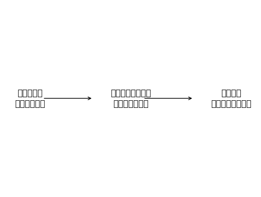

インタビュー
まとめ
「一票が大事」「意見を投げかけてほしい」「政治家に緊張感を持たせる」という発言から、 社会や政治をより良くするためには、若者一人ひとりが主体的に政治に関わり、 選挙や意見表明を通じて自分の考えを示すことが重要であるといえる。
その行動が、政治家に責任感と緊張感を持たせ、政治を動かす力につながる。
イメージ図

一票が大事
↓
意見を投げかけてほしい
↓
政治家に緊張感を持たせる
若者一人ひとりが選挙や意見表明を通じて社会に関わることで、政治家に責任ある行動を求める力になる。